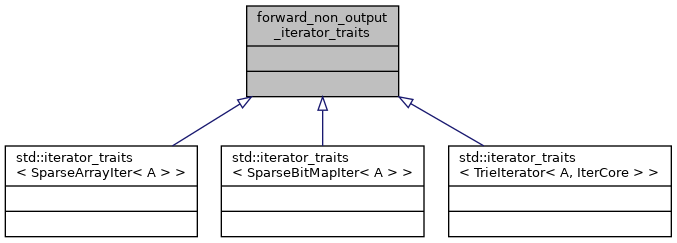
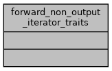

souffle
2.0.2-371-g6315b36
forward_non_output_iterator_traits Class Reference
Inheritance diagram for forward_non_output_iterator_traits:

Collaboration diagram for forward_non_output_iterator_traits:

The documentation for this class was generated from the following file:
include/souffle/datastructure/
Brie.h
Generated by
1.8.17